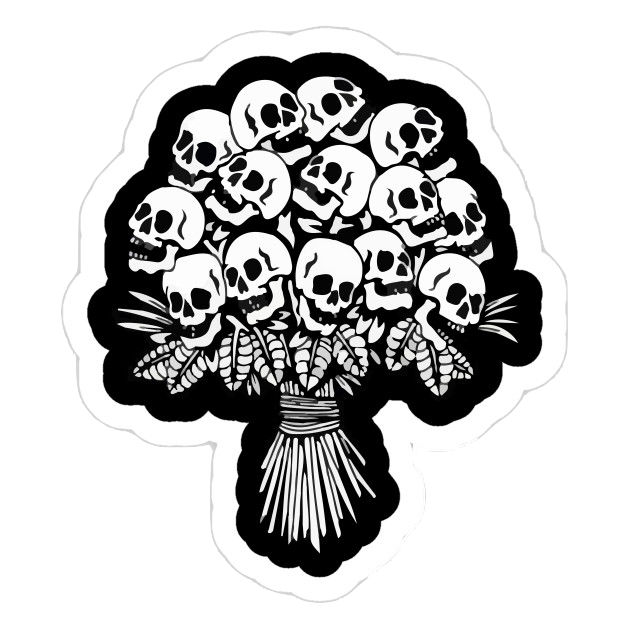
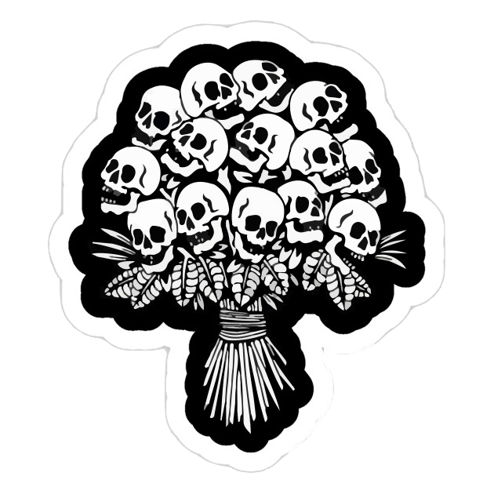

Tim Burton aesthetic
MuW201 Tangible Computing
Tim Burton is an iconic American director, animator, filmmaker, and artist to many major films which include; Coraline, Corpse Bride, Edward Scissorhands, The Nightmare Before Christmas etc… From what I’ve researched and observed, I have noticed that Tim Burton and is animated characters, visuals, and movies have its own certain aesthetic. Tim Burton uses many gothic elements in his works and the animated characters all have the same claymation type style. They all move the same, most of the characters have stitches somewhere across them, he uses dark and light colours to contrast, by making it gloomy and dull. The eyes of the characters usually pop out of their face, making the characters seem sullen and dull, A lot of dark and blue tones and shades are used, and the animations are made out of clay and carved clay which is what isolates this aesthetic more. Monochromatic colours also play a large role. I chose Tim Burton's aesthetic also known as ‘Burtonesque’ because I felt like it was unique and can be differentiated compared to others. Burton’s aesthetic is easily identifiable because of the different artistic style. Tim Burton also uses the style “Gothic Suburbia” a dark and gothic style that combines 19th and 20th - century styles. German Expressionism is what influenced Tim Burton the most when it comes to his style, expressionism uses exaggerated backdrops and shadows and silhouettes to escalate the dark aura and feeling. Burton uses a lot of geometrical shapes and patterns and distorted objects, to set the scene and setting. Another big source of inspiration Tim Burton takes from is The Day of the Dead, a Mexican holiday that commemorates, celebrates, and remembers the dead. The colourful skulls, also known as the Calavera, inspired him and can be seen throughout his works, like in corpse bride. With music, sound, lighting, and angles, Tim Burton captivates his audience using all your senses to make you feel the emotions of the characters. he manipulates the lighting in his scenes to give his audience a sense of fear or suspense. For this project, I decided to use a mix of colour shadows and light to parallel Tim Burtons themes, by using open processing (p5js), Body pix, and poseNet. (poseNet is a type of software that detects a person's stance or pose, and uses it to guess where a person's joints are in a live camera feed.) Using these methods I will code a face filter on javascript to resemble a button-eyed distorted face that is warping from Coraline's ‘other’ world, using the mouse the user would be able to move their face around.
Click the stickers to view extra work!
PROCESS click the stickers for code


 


10 visual elements:
1. Colour Blue
2. Blue/Dim lighting
3. Stitching
4. 3D
5. Large Eyes
6. Shadows
7. Black & Whites
8. Stripes/Lines
9. Gothic
10. Spirals
10 interaction dynamics:
1. Claymation
2. Monochromatic
3. Doll-like movement
4. Shadow placement
5. Lighting
6. Skeleton rattaling sounds
7. Green neon lights
8. Fabric movement
9. Lifeless movement
10. Flowy